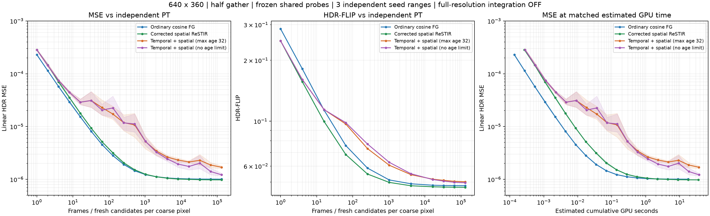
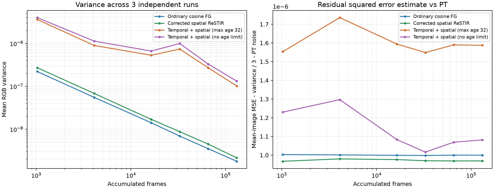
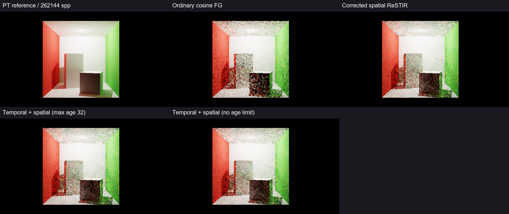
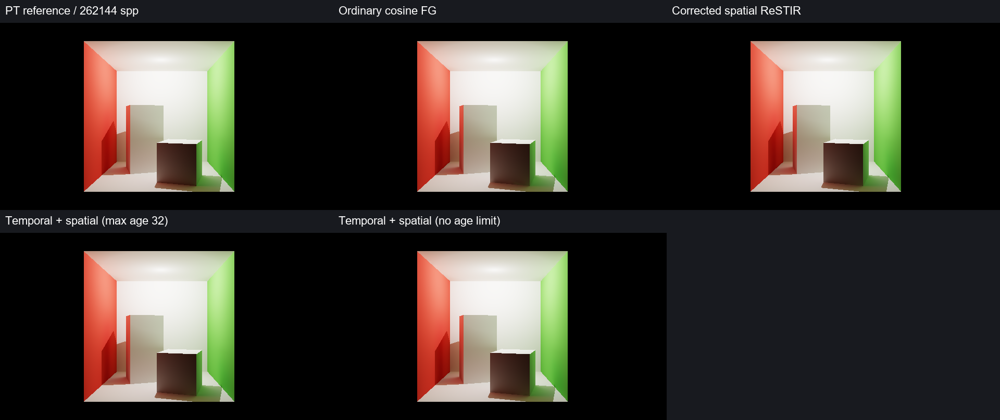
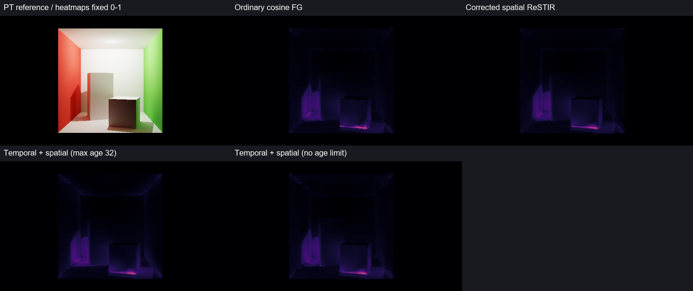

旧失稳序列的数值爆发已修复，但没有证据表明当前时空 ReSTIR 比普通 FG 收敛更快。131072 帧时，关闭年龄限制的时空复用平均 MSE 比普通 FG 高 21.1%；开启 32 帧年龄上限时高 68.3%。最终保留年龄限制为可选参数，默认设为 0（关闭）；ReSTIR 总开关仍默认关闭。数值稳定不等于无偏，实用收敛判定见后表。
本报告比较普通 cosine FG、只开启空间复用的修正版 ReSTIR、时空复用均开启的修正版 ReSTIR。参考是独立的未降噪 PT，不再使用普通 FG 自身的长序列。
额外加入“关闭年龄限制”的时空复用对照，用于区分本次归一化/可见性修正与样本寿命限制的影响。其余参数、随机序列与采样预算完全相同。
640×360 输出、320×180 gather；Lambert Cornell、相同点光源和相机。每组先进行 8192 帧 probe 更新，再冻结，相同 probe 输出逐像素一致已验证。测量从空 reservoir、空 Accumulate 历史开始。jitter 开启；全分辨率积分关闭，使用同一 16 tap 重建；无 NRD。ReSTIR 使用来源可见性校正，空间 2 pass × 4 邻居、半径 8，时间 M 上限 20，样本年龄上限 32 帧。每有效粗像素每帧一个新候选：普通 FG 为 cosine，ReSTIR 为 uniform，因此曲线比较的是实际方案，不是只隔离复用一项。
三个随机序列使用互不重叠的 frame seed 范围，每组累积 131072 帧。曲线是三个独立结果的误差平均，阴影为最小值到最大值，不是置信区间。GPU 时间轴按各方案稳定阶段测得的全图 GPU 帧耗时 × 帧数估算；不含公共 probe 预热、编译、读回和落盘。包含重连可见性射线和重建等开销，probe 测量期间冻结。
普通 FG 回归：第一个随机序列的 1、16、256、4096、131072 帧输出，与修正前对应 EXR 逐位一致；本次修正没有改变普通 FG 输出。
8 spp/frame，31 次表面/漫反射反弹，不使用 RR、ReSTIR 或降噪。明确启用固定 seed 接口并逐帧改变 seed，两条互不重叠的随机序列各 131072 spp，平均后得到 262144 spp 参考。两序列差分估计参考噪声 MSE 为 5.55284e-09；参考从 131072 spp 到 262144 spp 的图像变化 MSE 为 5.54514e-09。这是有限反弹、有限采样参考，不是解析真值。
MSE 在 GBuffer 可见场景像素上对线性 HDR RGB 求平均；HDR-FLIP 使用全组一致的自动选取曝光范围、ACES、67 PPD，随后在同一场景 mask 内平均。背景不计入指标。显示图统一 +3 EV，不影响线性指标。
参考：NVIDIA TemporalResampling、SpatialResampling。保留本项目的亮度 target、DDGI 命中点光照、Jacobian 范围拒绝与半分辨率重建，未宣称与 SDK 完全等价。
按 NVIDIA RTXDI GI 的来源归一化原则，记录最终选中来源，并在反向支持测试失败时令归一化分子为零；正向与反向可见性使用同一函数和保存的几何法线。归一化为 W = weightSum × p_selectedSource / (p_current × Σ M_i p_i)，不能在选中来源的支持为零时直接约掉分子。独立实现这些原则，并非直接集成 RTXDI SDK。增加非有限权重检查与独立样本年龄上限，本次比较上限为 32 帧。
先重放旧版失稳的 seed offset 262144：关闭年龄上限，运行 262144 帧；102 张原始/累积检查图全部有限，非有限值拒绝计数为零。旧版第 118272 帧原始峰值约 1.52×10¹²，修正后为 1.03。说明该回归通过，不代表证明所有场景无偏或所有随机序列稳定。详见 重放验证。

| 累积帧 | FG MSE | FG FLIP | 空间 MSE | 空间 FLIP | 时空 MSE | 时空 FLIP | 无年龄限制 MSE | 无年龄限制 FLIP |
|---|---|---|---|---|---|---|---|---|
| 1 | 0.0002286 | 0.28613 | 0.0002831 | 0.24952 | 0.0002831 | 0.24952 | 0.0002831 | 0.24952 |
| 4 | 5.7117e-05 | 0.18145 | 7.0175e-05 | 0.15672 | 7.4588e-05 | 0.16068 | 7.4588e-05 | 0.16068 |
| 16 | 1.5276e-05 | 0.11349 | 1.7864e-05 | 0.09978 | 2.8915e-05 | 0.11413 | 2.8915e-05 | 0.11413 |
| 64 | 4.5526e-06 | 0.07581 | 5.1532e-06 | 0.06844 | 2.285e-05 | 0.09686 | 2.0479e-05 | 0.09836 |
| 256 | 1.9148e-06 | 0.05864 | 2.0429e-06 | 0.05481 | 1.1859e-05 | 0.07322 | 1.1733e-05 | 0.07712 |
| 1024 | 1.2304e-06 | 0.05126 | 1.2447e-06 | 0.04983 | 5.1903e-06 | 0.06060 | 5.2497e-06 | 0.06264 |
| 4096 | 1.062e-06 | 0.04905 | 1.0538e-06 | 0.04797 | 2.6394e-06 | 0.05442 | 2.4389e-06 | 0.05499 |
| 16384 | 1.0188e-06 | 0.04826 | 9.9874e-07 | 0.04740 | 2.1305e-06 | 0.05170 | 1.7536e-06 | 0.05148 |
| 32768 | 1.0108e-06 | 0.04811 | 9.8436e-07 | 0.04725 | 2.2937e-06 | 0.05103 | 2.0209e-06 | 0.05060 |
| 65536 | 1.009e-06 | 0.04804 | 9.7896e-07 | 0.04718 | 1.8666e-06 | 0.05046 | 1.405e-06 | 0.04987 |
| 131072 | 1.0072e-06 | 0.04800 | 9.7685e-07 | 0.04712 | 1.6949e-06 | 0.05021 | 1.2192e-06 | 0.04963 |
列出平均 MSE 首次达到阈值的已测检查点，不在检查点之间插值；早期偶然越过阈值不等价于长期稳定。
| MSE 阈值 | 方案 | 检查点 / 估计累计 GPU 时间 |
|---|---|---|
| 2e-06 | Ordinary cosine FG | 256 帧 / 0.0348 s |
| 2e-06 | Corrected spatial ReSTIR | 512 帧 / 0.1386 s |
| 2e-06 | Temporal + spatial (max age 32) | 57344 帧 / 16.1804 s |
| 2e-06 | Temporal + spatial (no age limit) | 8192 帧 / 2.3201 s |
| 1.2e-06 | Ordinary cosine FG | 2048 帧 / 0.2786 s |
| 1.2e-06 | Corrected spatial ReSTIR | 2048 帧 / 0.5543 s |
| 1.2e-06 | Temporal + spatial (max age 32) | 未达到 |
| 1.2e-06 | Temporal + spatial (no age limit) | 未达到 |
| 方案 | 平均 MSE vs PT | 平均 HDR-FLIP | 独立序列间方差 | 系统残差平方估计 | GPU ms/frame |
|---|---|---|---|---|---|
| Ordinary cosine FG | 1.00719e-06 | 0.047997 | 1.789e-09 | 9.99848e-07 | 0.1360 |
| Corrected spatial ReSTIR | 9.76846e-07 | 0.047125 | 2.153e-09 | 9.69141e-07 | 0.2706 |
| Temporal + spatial (max age 32) | 1.6949e-06 | 0.050212 | 1.019e-07 | 1.58742e-06 | 0.2822 |
| Temporal + spatial (no age limit) | 1.21922e-06 | 0.049631 | 1.322e-07 | 1.08145e-06 | 0.2832 |
“系统残差平方估计” = 三序列平均图对 PT 的 MSE − 序列间方差/3 − PT 参考噪声估计。它用来区分随机噪声与长期偏离 PT 的残差；只有三个序列，仍是诊断估计，不能作为严格无偏性的证明。残差包含 DDGI 本身近似、半分辨率重建和复用误差等。

采用预先写入评分脚本的标准：连续两次翻倍后的平均 MSE 变化均小于 2%；最后一次翻倍平均图变化 MSE 小于对 PT 误差的 1%；平均图的序列间随机误差估计小于其对 PT 误差的 5%。未通过则明确不称为完全收敛。方差稳定或累积画面不闪，不等于图像正确。
| 方案 | 32k→64k MSE 变化 | 64k→128k MSE 变化 | 末次图像变化/误差 | 平均图随机误差/总误差 | 判定 |
|---|---|---|---|---|---|
| Ordinary cosine FG | -0.17% | -0.18% | 0.06% | 0.06% | 通过 |
| Corrected spatial ReSTIR | -0.55% | -0.22% | 0.07% | 0.07% | 通过 |
| Temporal + spatial (max age 32) | -18.62% | -9.20% | 2.33% | 2.09% | 未通过，不能标为完全收敛 |
| Temporal + spatial (no age limit) | -30.48% | -13.22% | 3.39% | 3.90% | 未通过，不能标为完全收敛 |
在 131072 帧之后，采集两个各 64 连续帧的窗口，中间再等待 4096 帧；同时保存重建后的未累积图和 Accumulate 输出。下表为每像素 RGB 时间方差的场景平均，再对三个随机序列取平均。时间复用会造成相关性，短窗口可能低估长期变化，所以不单凭该表判断收敛。
| 方案 | 窗口 | 未累积图时间方差 | 累积图时间方差 |
|---|---|---|---|
| Ordinary cosine FG | 1 | 0.000228413 | 1.41891e-13 |
| Ordinary cosine FG | 2 | 0.000228581 | 1.35119e-13 |
| Corrected spatial ReSTIR | 1 | 0.00027636 | 1.75292e-13 |
| Corrected spatial ReSTIR | 2 | 0.000273545 | 1.62249e-13 |
| Temporal + spatial (max age 32) | 1 | 0.000871716 | 1.10264e-12 |
| Temporal + spatial (max age 32) | 2 | 0.000783821 | 8.65674e-13 |
| Temporal + spatial (no age limit) | 1 | 0.000750518 | 8.46107e-13 |
| Temporal + spatial (no age limit) | 2 | 0.000723098 | 1.21832e-12 |
以下为第一个随机序列，保留单次运行的实际噪声；不是三次运行图像的平均。


三序列平均图相对 PT 的 HDR-FLIP；Magma 色标固定 0–1，暗紫误差小、黄白误差大。不同方案没有分别拉伸色标。

脚本：tests/ddgi/restir_nvidia_fix_comparison.py、score_restir_nvidia_fix_comparison.py。原始 EXR、场景参数、运行记录、源码哈希和 profiler 输出位于 build/restir-nvidia-fix-comparison；PT 参考复用自 build/restir-pt-convergence（材质、灯光与 PT 实现未改）；机器可读结果见 summary.json。本次未改变渲染器默认设置，ReSTIR 仍默认关闭。